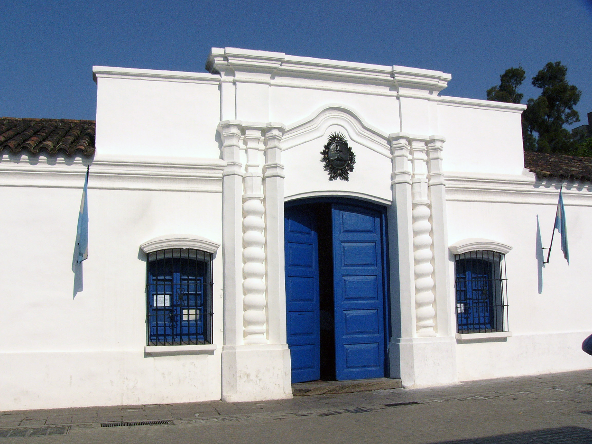

9 de Julio - Día de la Independencia
El 9 de julio de 1816, el Congreso de Tucumán declaró la independencia de Argentina. Este fue un hito clave en la emancipación del país, consolidando la ruptura con la corona española.
`El 9 de julio de 1816, en la Casa Histórica de Tucumán, los representantes de las Provincias Unidas del Río de la Plata proclamaron oficialmente la independencia respecto de la monarquía española.
Esta decisión, tomada por el Congreso reunido en Tucumán, consolidó el proceso iniciado en 1810 y marcó el nacimiento de un país soberano. En un contexto internacional complejo, con amenazas externas y tensiones internas, los congresales reafirmaron su voluntad de libertad y autodeterminación.
La Declaración de la Independencia es un símbolo de unidad nacional, compromiso con la patria y la libertad. El 9 de julio es uno de los días más celebrados en Argentina, con desfiles, actos oficiales y una fuerte presencia en las escuelas.